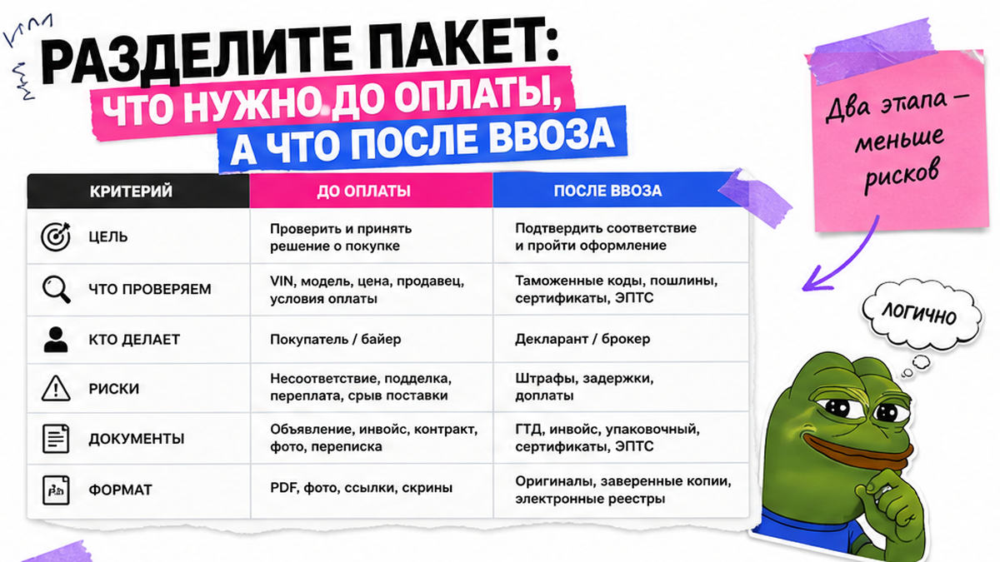
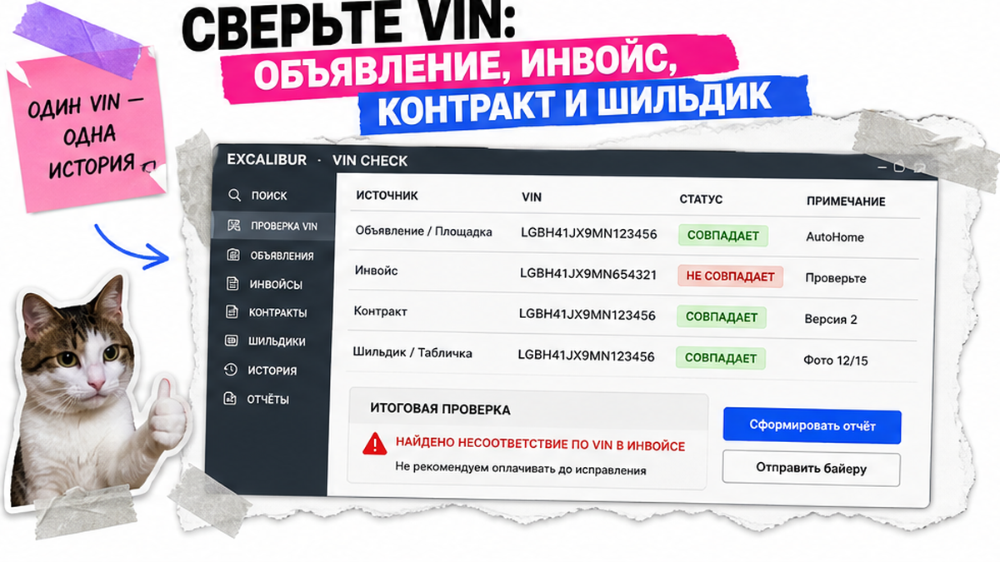
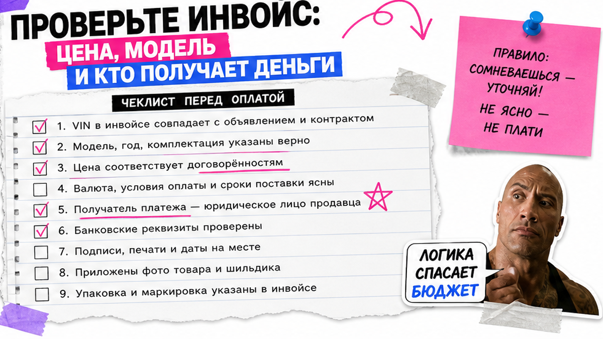

Игорь из Новосибирска уже держал палец над кнопкой: “почти новый LiXiang”, скидка “только сегодня”, а в ответ – размытый фото-инвойс без читаемого VIN и “остальное после оплаты”. Знакомый страх: перевести деньги за авто из Китая и потом узнать, что документы поддельные или номер кузова “левый”, и ГАИ на учёт не поставит. Ниже – стоп-правило до депозита: сверка VIN, проверка инвойса и реестров ЭПТС/СБКТС, чтобы не платить вслепую.
Коротко: До оплаты нужны не “красивые PDF”, а пакет: полный VIN, фото заводского шильдика, читаемый контракт и инвойс, имя экспортера. VIN совпадает минимум в трёх местах. СБКТС – в реестре Росстандарта, ЭПТС – на elpts.ru. Нет пакета или записи – перевод не отправляете. Так вы получите понятный результат до оплаты.
В выдаче полно гайдов про растаможку авто из Китая и общий список бумаг. На практике ломается другое: человек платит раньше, чем понимает, где заканчивается китайский счёт и где начинается российский электронный паспорт. Мы во Владивостоке видим и аккуратные сделки, и тихие слёзы на СВХ (складе временного хранения), когда “всё готово” оказывается картинкой в мессенджере.
Важный нюанс 2026 года: в марте лаборатория во Владивостоке и Забайкалье публично разбирала поддельные VIN-шильдики на машинах из Китая. Такие авто попадают в реестр как проблемные – “красивые документы” не спасают. Поэтому сначала бумага и шильдик, потом деньги.

Типичная ошибка новичка – путать китайский инвойс с российским ЭПТС. На пальцах: инвойс – счёт продавца (кто, что, за сколько). ЭПТС – электронный паспорт транспортного средства. СБКТС – свидетельство о безопасности конструкции для единичного ввоза; без него ЭПТС часто не оформить.
| Документ / факт | Когда нужен | Что проверяете | Стоп-сигнал |
|---|---|---|---|
| VIN + фото шильдика | До любого депозита | Совпадение с объявлением и инвойсом | Нет фото крупно / цифры не читаются |
| Контракт + инвойс | До оплаты | Модель, год, цена, реквизиты получателя | Размытый скан, “пришлём потом” |
| Имя экспортера | До депозита | Кто реально вывозит авто из Китая | Только посредник без компании |
| СБКТС + ЭПТС | После ввоза / если “уже в РФ” | Запись в реестре и на портале СЭП | Номер в PDF есть, в реестре пусто |
Сделайте: запросите до депозита VIN, шильдик, контракт, инвойс и экспортера. Не делайте: не верьте обещанию “ЭПТС сами сделаем из Китая” без российского контура.
Схема безопасной сделки:
Запрос пакета → Сверка VIN в 3+ местах → Проверка инвойса → Статус машины → При “уже в РФ” – СБКТС/ЭПТС в реестрах → Только потом этапы оплаты

VIN – 17-значный идентификатор кузова. Например, продавец шлёт фото салона и говорит “VIN тот же”, а в инвойсе другая комбинация. На практике любое расхождение – стоп.
Если машину продают “с документами на руках”, шильдик всё равно важен: поддельная табличка может выглядеть аккуратно.
Сделайте: сохраните скрины сверки до оплаты. Не делайте: не верьте устному “мы сверили” без ваших глаз на цифрах.

Инвойс – сверка сделки, не картинка. Типичная ошибка: цена занижена “для таможни”, модель чуть другая, получатель платежа не совпадает с продавцом по контракту. Занижение цены потом ловят корректировкой таможенной стоимости.
Ответ “сначала 100%, потом всё пришлём” – риск. Избегайте оплаты на личную карту “для скорости”.
Сделайте: платите только на реквизиты из договора. Используйте один пакет реквизитов в контракте и в платежке.
Когда лот продают как “уже в России, документы готовы”, нужны две официальные проверки – не скрин из чата. Проверьте номер сами.
Нет записи в реестре – не платите как за “готовое к учёту”. Актуальные лоты – в каталоге avto-sales125.ru; сверка с менеджером – в Telegram @avtosales125.
Сделайте: сами откройте реестр и портал. Не делайте: не путайте номер в Word-файле с записью в госсистеме.
Даже идеальный PDF не спасает, если продавец давит. В реальном проекте закупки из Китая флаги почти одни и те же.
Сделайте: обсуждайте этапы оплаты (например, 30/70) только после пакета сверки. Избегайте схемы “всё сразу, бумаги потом”.
С 2026 для “молодых” б/у из Китая действует правило около 180 дней с первичной регистрации. Если машина в Китае меньше 180 дней, для экспорта может понадобиться доп. контроль и письмо производителя о сервисе. Без этого авто могут не выпустить – а депозит уже ушёл. Проблема дорого обходится, если дату не спросили заранее.
Запросите дату китайской регистрации до оплаты. Уклончивый ответ – стоп. “Нулевой б/у” без даты – загадка.
Сделайте: зафиксируйте дату регистрации в переписке. Не делайте: не платите за лот, который могут не выпустить на экспорт.
Критерий успеха: чеклист заполнен, VIN совпал минимум в трёх местах, инвойс и контракт сверены, экспортер назван, вы отказались от 100% предоплаты без бумаг. Сомнительная сделка остановлена или передана проверенному импортёру. Это ваш результат на сегодня – сможете сами решить: платить или стоп.
Так вы отличаете рабочий пакет документов на авто из Китая от подделки ещё до оплаты.
Материал проверен: редакция Авто-Сейлс (эксперты по авто под заказ из Японии, Кореи и Китая).
Достоверность: факты сверены с открытыми источниками (реестр СБКТС Росстандарта, портал СЭП/ЭПТС, материалы по правилу 180 дней и кейс поддельных VIN-шильдиков, март 2026) и практикой сопровождения заказов; актуальные расчёты – в каталоге.
До оплаты: полный VIN, фото шильдика, контракт, читаемый инвойс, имя экспортера. После ввоза: таможенная декларация, СБКТС, ЭПТС.
Сверьте VIN, модель, год, цену и реквизиты получателя с контрактом. Размытый скан или “документы после 100%” – стоп.
СБКТС – в реестре Росстандарта на сайте rst.gov.ru. ЭПТС – на elpts.ru по VIN или номеру паспорта. Нет записи – не платите за “готовый к учёту” пакет.
Откажитесь. Сначала пакет сверки, потом этапы оплаты. Давление срочностью и отказ от осмотра – красные флаги.
Для “молодых” б/у с короткой китайской регистрацией с 2026 может понадобиться доп. контроль и письмо производителя. Запросите дату регистрации до депозита.
Нет. В 2026 фиксировали поддельные VIN-таблички на авто из Китая – ГАИ такие машины на учёт не ставит. Сверяйте шильдик с инвойсом до полной оплаты.